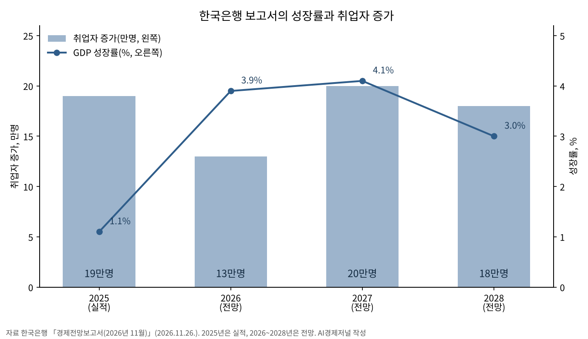
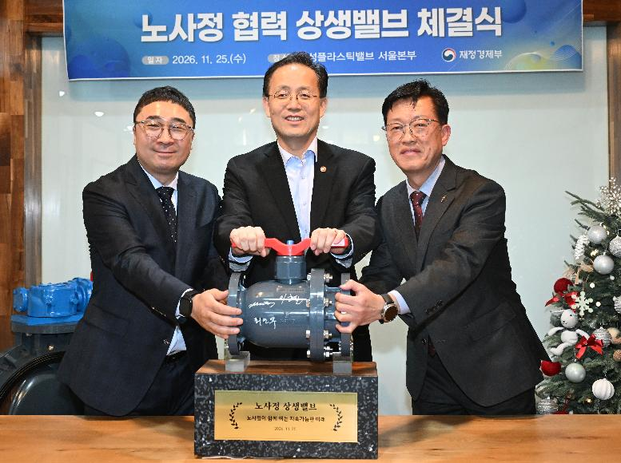
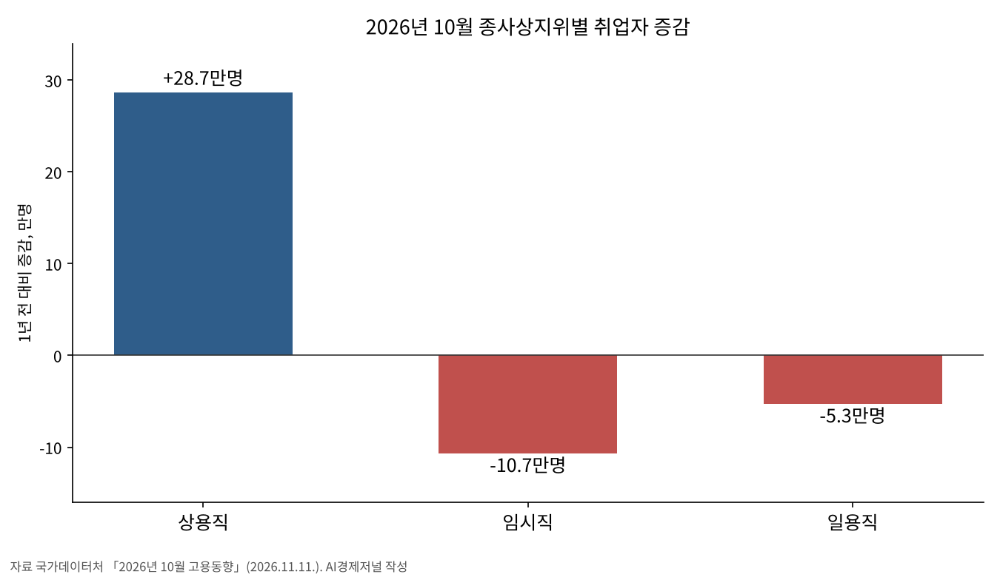

한국은행 성장률 3.9% 전망, 취업자 증가는 13만명
지난해 1.1% 성장에 취업자 19만명 증가, 올해 전망은 6만명 적은 13만명
7~8월 특별급여 15.5% 상승, 반기 성과급은 IT제조업·금융업 중심
10월 상용직 28만7000명 증가, 임시·일용직 16만명 감소
AI경제저널=김갑봉 기자 | 한국은행이 26일 「경제전망보고서(2026년 11월)」를 냈다. 올해 취업자 증가 전망은 13만명으로 8월보다 1만명 적다. 서비스업 고용 회복이 예상보다 더디다는 이유다.
같은 보고서에서 올해 성장률 전망은 3.3%에서 3.9%로 올랐다. 지난해에는 1.1% 성장에 취업자가 19만명 늘었다. 올해 취업자 증가 전망은 지난해보다 6만명 적다(AI경제저널 계산).
한국은행은 7~8월 특별급여가 IT제조업·금융업 반기 성과급과 일부 대기업 임단협 조기 타결로 크게 올랐다고 분석했다. 비IT 부문 임금 상승폭은 상대적으로 제한될 것으로 봤다.
성장률 1%포인트당 취업자 증가
한국은행 보고서 표에서 2025년 실적은 성장률 1.1%, 취업자 19만명 증가다. 2026년 전망은 3.9%와 13만명이다. 2027년은 4.1%와 20만명, 2028년은 3.0%와 18만명이다.
취업자 증가를 성장률로 나누면 성장률 1%포인트당 취업자 증가가 나온다. 2025년 17만3000명, 2026년 3만3000명, 2027년 4만9000명, 2028년 6만명이다(AI경제저널 계산).

만명 단위로 낸 실적·전망치를 단순히 나눈 값이다. 김용현 당시 대구경북연구원 책임연구원은 1971~2004년 자료로 성장과 고용의 관계를 회귀분석했다.
논문은 2005년 『노동정책연구』에 실렸다. 경제성장률 1% 상승은 취업자 0.39~0.40% 증가로 이어졌다. 논문은 이를 2004년 취업자 기준 일자리 8만8000~9만개로 계산했다.
논문은 성장에 따른 고용이 여전히 이뤄진다고 결론지었고, 일자리 흡수 여력은 낮아졌다고 밝혔다. 실질GDP 10억원당 취업자 수는 1970~80년 평균 113.5명에서 2004년 32.5명으로 줄었다.
한국은행은 고용 회복이 IT부문에서 다른 부문으로 차츰 퍼질 것으로 봤다. 내년에는 AI 관련 투자가 빨라지면서 전후방 연관 산업의 고용이 늘 것으로 내다봤다.
특별급여가 끌어올린 7~8월 임금

한국은행이 고용노동부 자료로 분석한 7~8월 명목임금 상승률은 3.2%다. 2분기 2.1%보다 높다. 상용직 정액급여 상승률은 2.2%에서 2.4%로 전분기 수준이었다.
특별급여 상승률은 2.8%에서 15.5%로 뛰었다. 보고서는 임단협 조기 타결 사례로 기아차(2025년 9월→2026년 8월)와 현대제철(2025년 11월→2026년 8월)을 들었다.
고용노동부 「2026년 9월 사업체노동력조사」에서 8월 상용직 특별급여는 40만원이다. 1년 전보다 32.4% 많다. 기본급과 수당인 정액급여는 371만3000원으로 2.4% 늘었다.
고용노동부 노동시장조사과장은 10월 29일 사업체노동력조사 브리핑에서 특별급여 상승에는 지급 시기 변경의 영향이 가장 컸던 것으로 보인다고 설명했다.
한국은행은 명목임금이 앞으로 특별급여를 중심으로 높은 오름세를 보일 것으로 내다봤다. 성과급 확대에 따른 임금 인상 영향은 주로 IT부문에 국한된다고 봤다.
상용직 증가와 임시·일용직 감소
국가데이터처 「2026년 10월 고용동향」에서 10월 취업자는 2917만9000명이다. 1년 전보다 13만9000명 많다. 상용직은 28만7000명 늘었다.
임시직은 10만7000명, 일용직은 5만3000명 줄었다. 임시·일용직을 합하면 16만명 감소다(AI경제저널 계산). 산업별로는 숙박·음식점업이 13만7000명, 건설업이 4만2000명 줄었다.

보건업·사회복지서비스업은 24만9000명 늘었다. 연령별로는 60세 이상이 19만6000명 늘고 20대는 20만3000명 줄었다. 15세 이상 고용률은 63.3%로 1년 전보다 0.1%포인트 낮다.
한국은행은 대면서비스업 취업자 감소를 주로 기저효과로 봤다. 2025년 7월과 9월 소비쿠폰 지급 등으로 대면서비스업 취업자가 일시적으로 크게 늘었다는 설명이다.
한국은행은 건설업·제조업 감소폭은 줄고 있으나 300인 미만 취약부문은 여전히 부진하다고 밝혔다. 임시·일용직은 대면서비스업 중심으로 감소폭이 커졌다고 분석했다.
인천 10월 취업자 2만9000명 증가
경인지방데이터청 「2026년 10월 인천광역시 고용동향」에서 인천 취업자는 176만6000명이다. 1년 전보다 2만9000명(1.7%) 많다. 고용률은 63.8%로 1년 전과 같다.
인천은 상용직 3만2000명, 임시직 1만7000명, 일용직 1000명이 늘었고 자영업자는 2만명 줄었다. 같은 달 국가 전체로는 임시직 10만7000명, 일용직 5만3000명이 줄었다.
산업별 인천 취업자는 사업·개인·공공서비스·기타에서 3만8000명, 제조업에서 6000명 늘었다. 전기·운수·통신·금융업에서 1만3000명, 건설업에서 6000명 줄었다.
한국은행이 꼽은 위험 요인, 정부 고용 대책
한국은행은 고용 전망의 위험으로 일부 유통업체의 회생절차 진행 상황, 취약부문 고용 회복 정도, AI 관련 투자 속도 등을 들었다. 15세 이상 연간 고용률 전망은 올해 62.8%, 내년 63.0%다.
성장 전망의 상방 위험에는 반도체 경기 확장세 강화와 IT 호황의 다른 부문 파급 확대가 들어 있다. 하방 위험에는 AI 투자 조정과 비IT 부문의 더딘 개선이 들어 있다. 낙관 시나리오에서 내년 성장률은 기본 전망보다 0.5%포인트 높다고 추정했다.
고용노동부는 11일 10월 고용동향 참고자료에서 청년, 건설·농림어업 취업자 감소세가 이어진다고 밝혔다. 정부는 성장의 과실이 일자리로 퍼지도록 범부처 역량을 모으겠다고 했다.
같은 자료에서 정부는 청년·고령층, 조기퇴직 중장년층 같은 취약부문 고용여건을 개선하는 국민일자리 프로젝트 추진방안을 서둘러 마련한다고 밝혔다.
고용노동부는 20일 권창준 차관 주재로 「노동시장 이중구조 개선반」 첫 회의를 열었다. 고용노동부는 기업 규모와 고용 형태에 따라 임금·복지·안전 같은 노동조건에 차이가 있다고 밝혔다.
참고문헌
- 김용현, 「'고용없는 성장(Jobless Growth)' 현실인가?」, 『노동정책연구』 제5권 제3호, 한국노동연구원, 2005, 35~62쪽, https://repository.kli.re.kr/bitstream/2021.oak/2337/2/%eb%85%b8%eb%8f%99%ec%a0%95%ec%b1%85%ec%97%b0%ea%b5%ac_%ec%a0%9c5%ea%b6%8c_%ec%a0%9c3%ed%98%b8_2.pdf
- "경제전망보고서(2026년 11월)", 한국은행 조사국, 2026.11.26., https://www.bok.or.kr/portal/bbs/P0002359/view.do?nttId=11067100&menuNo=200066
- "2026년 10월 인천광역시 고용동향", 경인지방데이터청, 2026.11.11., https://mods.go.kr/board.es?mid=a30301010100&bid=5106&act=view&list_no=447881
- "2026년 10월 고용동향", 국가데이터처, 2026.11.11., https://www.korea.kr/briefing/policyBriefingView.do?newsId=156788701
- "’26년 9월 사업체노동력조사 및 ’26년 4월 산업소분류 고용통계 결과 공표" 부처 브리핑, 고용노동부, 2026.10.29., https://www.korea.kr/briefing/policyBriefingView.do?newsId=156787102
- "(참고) ’26.10월 취업자수는 13.9만명 증가하여 4개월 연속 두 자릿수 증가", 고용노동부, 2026.11.11., https://www.moel.go.kr/news/enews/report/enewsView.do?news_seq=20232
- "2026년 9월 사업체노동력조사 및 2026년 4월 산업소분류별 고용통계 결과", 고용노동부, 2026.10.29., https://www.moel.go.kr/news/enews/report/enewsView.do?news_seq=20162
- "(참고) 모두의 성장으로 대전환을 위해 전 부처 역량 결집 - 양극화 대응 TF 「노동시장 이중구조 개선반」 1차 회의 개최", 고용노동부, 2026.11.20., https://www.moel.go.kr/news/enews/report/enewsView.do?news_seq=20280
[사진 출처]
- [사진 1] 재정경제부 사진뉴스 「이형일 부총리, 임금체계 개편 관련 현장방문 및 간담회」(2026.11.25.), 공공누리 제4유형, https://www.mofe.go.kr/nw/mosfnw/photoDetail.do?searchNttId1=MOSF_000000000080045&menuNo=4010400
※ 이 기사는 AI 프로그램 클로드를 활용해 작성했습니다.
관련기사
- 기준금리 3.25%로 0.25%포인트 인상, 새 가계대출 76%는 변동금리
- 8월 실질임금 0.8% 증가, 상용·임시일용 월급 격차 268만8000원
- 2분기 임금일자리 40만6000개 증가, 20대 이하 5만6000개 감소
- [AI 노동시장②] AI 노출 직업에서 줄어든 청년 몫과 임금
저작권자 © AI경제저널 무단전재 및 재배포, AI학습 및 활용 금지